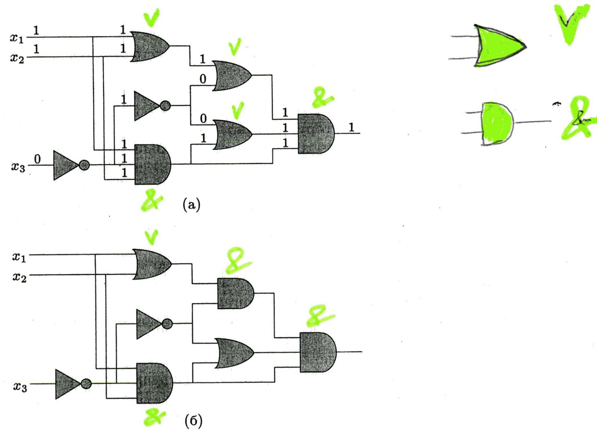
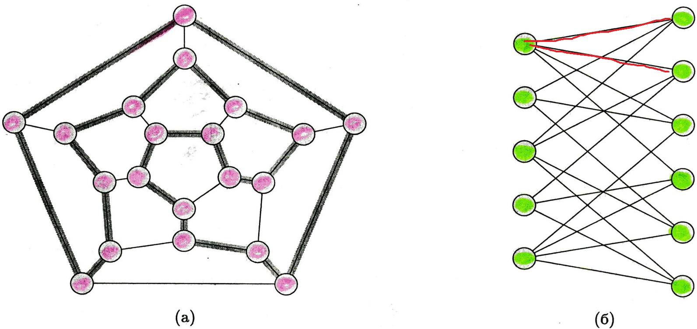

Лекция 10: Классы сложности P и NP
Александр Дерендяев
Классы сложности P и NP
Временная сложность алгоритма
Временная сложность алгоритма — число операций алгоритма $А$ в среднем при входе размера $n$:
\[M_A(n) = \sum_{i\in P} p_i \mu (A_i)\]Сложность алгоритма оценивается асимптотической сложностью, т.е. при $n\to\inf$
Сложность задачи — сложность наилучшего алгоритма, известного для ее решения
Класс P
Полиномиальный алгоритм — сложность не превышает полином $p(n)$ для любых данных длинной $n$
Задача полиномиально разрешима, если дня нее существует полиномиальный алгоритм
Класс P — множество всех полиномиально разрешимых задач
Класс P
Примеры:
- Школьный алгоритм сложения: $O(n)$
- Школьный алгоритм умножения: $O(n^3)$
- Алгоритм умножения Карацубы: $O(n^{\log_23})$
- Алгоритм умножения Шёнхаге — Штрассена: $O(n\cdot\log n\cdot\log \log n)$
Полиномиальный алгоритм — эффективный алгоритм!
Зависимость от сложности алогритма
| Алгоритм | Сложность | Максимальный размер задачи, решаемой за указанное время | ||
| 1 с | 1 м | 1 ч | ||
| А1 | N | 1 000 | 60 000 | 3 600 000 |
| А2 | $N^2$ | 31 | 244 | 1 897 |
| А3 | $N^3$ | 10 | 39 | 153 |
| А4 | $2^N$ | 9 | 15 | 21 |
Зависимость от скорости компьютера
| Алгоритм | Сложность | Максимальный размер задачи | |
| до ускорения | после ускорения в 10 раз | ||
| А1 | N | S1 | 10*S1 |
| А2 | $N^2$ | S2 | 3.16*S2 |
| А3 | $N^3$ | S3 | 2.15*S3 |
| А4 | $2^N$ | S4 | S4+3.3 |
Класс NP
Класс NP — класс задач, для которых решение (сертификат) может быть быстро (полиномиально) проверено
Длина сертификата тоже полиномиальна
Другая формулировка: NP — класс задач, разрешимых на недетерминированной машине Тьюринга за полиномиальное время
Класс NP
Класс NP
Класс NP
Еще примеры:
- Задача выполнимости булевых формул: узнать по данной булевой формуле, существует ли набор входящих в неё переменных, обращающий её в 1. Сертификат — такой набор.
- Задача о клике: по данному графу узнать, есть ли в нём клики (полные подграфы) заданного размера. Сертификат — номера вершин, образующих клику.
Класс NP
Еще примеры:
- Определение наличия в графе гамильтонова цикла. Сертификат — последовательность вершин, образующих гамильтонов цикл.
- Неоптимизационный вариант задачи о коммивояжёре (существует ли маршрут не длиннее, чем заданное значение k) — расширенный и более приближенный к реальности вариант предыдущей задачи. Сертификат — такой маршрут.
Класс NP
Еще примеры:
- Существование целочисленного решения у заданной системы линейных неравенств. Сертификат — решение.
- Отсутствие у заданного числа $m$ делителей $d$ таких что $1 < d \leq k$. Сертификат — разбиение числа $m$ на простые сомножители вместе с их сертификатами простоты.
P = NP ?
Если на какой вопрос есть положительный ответ и его можно быстро проверить, то верно ли, что и ответ можно найти так же быстро?
NP-полные и NP-трудные задачи
Задача A сводится к задаче B, если метод решения B можно преобразовать в метод решения A
Задача называется NP-трудной, если любая задача из NP полиномиально сводится к ней
Задача называется NP-полной, если она NP-трудная и находится в классе NP
NP-полные и NP-трудные задачи

NP-полные задачи
- Задача о выполнимости булевых формул
- Задача коммивояжёра
- Задача о вершинном покрытии
- Задача о покрытии множества
- Задача о независимом множестве
- Задача о клике
Класс EXP
Если время решения задачи на машине Тьюринга экспоненциально, то такая задача из класса EXP.
Тонкость: $O(n^{\log_2n}) = O(2^{\log_2^2n})$ — растет быстрее любого полиномиального, но медленнее $2^n$
Класс EXP
Линейное программирование:
\[z = c_1x_1 + c_2x_2 + \ldots + c_nx_n \to \min(\max) \\ a_{11}x_1 + a_{12}x_2 + \ldots + a_{1n}x_n \geq b_1 \\ \cdots \\ a_{m1}x_1 + a_{m2}x_2 + \ldots + a_{mn}x_n \geq b_m \\ x_i \geq 0, 1\leq i \leq n \]Симплекс-метод, который широко используется, хоть и является экспоненциальным
Другие классы сложности
Приближенные алгоритмы
Приближенные алгоритмы
Часто, возникшая на практике NP-полная задача настолько важна, что нельзя отказаться от ее решения.
Если реальные данные позволяют, можно построить неполиномиальный алгоритм для данной задачи.
В случае, если неполиномиальный алгоритм не работает в приемлемое время, можно попытаться (применительно к задачам оптимизации) найти не точное решение, а некоторое приближенное к нему.
Приближенные алгоритмы
Алгоритмы, выдающие приближенные к оптимальному решения, называются приближенными.
Говорят, что алгоритм решает задачу с ошибкой не более чем в $\rho(n)$ раз, если стоимость найденного им решения ($С$) отличается от стоимости оптимального ($С^*$) не более чем в $\rho(n)$ раз:
$\max(\frac{C}{C^*},\frac{C^*}{C}) \leq \rho(n)$Иногда, для оценки качества алгоритма используют относительную ошибку. Говорят, что алгоритм имеет относительную ошибку не более $\varepsilon(n)$, если:
\[\frac{C-C^*}{C^*} \leq \varepsilon(n)\]Зная $\rho(n)$ легко можно оценить относительную ошибку:
\[\varepsilon(n) \leq \rho(n)-1\]Для некоторых алгоритмов можно улучшать качество приближения, за счет увеличения времени их работы.
Схемой приближения для данной оптимизационной задачи называется алгоритм, который, помимо условия задачи получает положительное число $\varepsilon(n)$ и выдает решение с относительной ошибкой не более $\varepsilon(n)$
Схема приближения называется полиномиальной, если для некоторого фиксированного $\varepsilon$ время ее работы не превосходит некоторого полинома от размера входа $n$.
Схема приближения называется полностью полиномиальной, если время ее работы ограничено некоторым полиномом от $n$ и от $1/\varepsilon$, где n-размер входа, а $\varepsilon$ – оценка относительной ошибки.
Задача о вершинном покрытии
- Вершинное покрытие – такое множество вершин графа, что хотя бы один из концов любого ребра соединен с вершиной входящей в это множество.
- Размер вершинного покрытия – количество входящих в него вершин.
- Задача требует нахождения минимально возможного вершинного покрытия графа.
void ApproxVertexCover(G){
C = {}; // пустое множество
E = G->E; // множество ребер графа
while (E != {}) {
Edge uv = ExctractRandom(E);
//Берем произвольное ребро графа
C->Include(uv->node1);
C->Include(uv->node2);
//Вносим вершины, которое соединяет это ребро
//во множество C
E->RemoveEdges(uv->node1);
E->RemoveEdges(uv->node2);
//Удаляем все ребра инцидентные с вершинами
}
}

Теорема
Алгоритм ApproxVertexCover работает с ошибкой не чем в два раза
Доказательство
Результатом работы алгоритма действительно является вершинное покрытие, поскольку работа продолжается пока множество непокрытых ребер не останется пустым.
Доказательство
Никакие два ребра, рассматриваемые в ходе работы алгоритма, не имеют общей вершины, т.е. количество рассмотренных вершин ровно в два раза больше количества рассмотренных ребер.
Кроме того, оптимальное покрытие содержит хотя бы одну вершину инцидентную рассматриваемому ребру, т.е. количество вершин в оптимальном решение больше либо равно количеству рассмотренных ребер.
Задача коммивояжера
Задача коммивояжера
Задача коммивояжера состоит в нахождении во взвешенном графе гамильтонова цикла минимальной стоимости (с минимальной суммой весов ребер).
На практике функция стоимости ребер обычно удовлетворяет неравенству треугольника, т.е. промежуточная «остановка» в вершине $v$ на пути из $u$ в $w$ не уменьшает его стоимости:
\[c(u,w) \leq c(u,v)+v(v,w)\]Задача коммивояжера

void ApproxTSPTour(G,c){
//выбираем произвольную вершину
root = GetRandomVertex(G);
//строим минимальное покрывающее дерево
mintree = MSTPrim(G,root);
//результатом является обход дерева с
// исключенными повторениями
path = TreeWalk(mintree);
DeleteRepetition( path);
}
Задача коммивояжера

Теорема
Алгоритм ApproxTSPTour решает задачу коммивояжера с ошибкой не более чем в два раза, если выполнено неравенство треугольника.
Теорема
Если $P\neq NP$ и $\rho>1$, то не существует полиномиального приближенного алгоритма, решающего общую задачу коммивояжера с ошибкой не более чем в $\rho$ раз.
Задача о суммах подмножеств
Задача о суммах подмножеств
Пусть дано некоторое множество $S$, состоящее из целых чисел, и целое число $t$. Требуется выяснить существует ли в $S$ подмножество сумма элементов которого равна $t$.
Задачу можно поставить как задачу оптимизации, требуя отыскать среди подмножеств сумма которых не превосходит $t$, наиболее близкое к $t$.
Для задачи можно построить алгоритм работающий за экспоненциальное время.
def EXPSubSetSum(S,t):
sums = {0};
for element in S:
new_sums = [(s+element) for s in sums if s+element <= t]
#Удаляем из sums элементы больше t
sums.update(new_sums)
return max(sums)
#возвращаем максимальный элемент из sums
Задача о суммах подмножеств
Из приведенного алгоритма можно получить полностью полиномиальную схему приближения, если хранить списки не полностью, а в сокращенном варианте.
Степень сокращения определяется параметром $\delta$: чем он меньше, тем «полнее» список.
Задача о суммах подмножеств
Список $L`$ называется $\delta$-сокращением списка $L$, если для любого элемента $y$ из $L$ в списке $L`$ найдется не превосходящий его элемент $z$ для которого выполнено неравенство:
\[\frac{y-z}{y}\leq\delta\]Для задачи можно построить алгоритм работающий за экспоненциальное время.
def ListTrim(S,delta):
L = sorted(S)
last = L[0]
Ls = [L[0]]
for i in range(1,len(L)):
if last < (1-delta)*L[i]:
last = L[i]
Ls.append(last)
return set(Ls)
def ApproxSubSetSum(S,t,delta):
sums = {0};
for element in S:
new_sums = [(s+element) for s in sums if s+element <= t]
#Удаляем из sums элементы больше t
sums.update(new_sums)
sums = ListTrim(sums, delta)
return max(sums)
#возвращаем максимальный элемент из sums
Задача о суммах подмножеств
Теорема
Алгоритм ApproxSubSetSum является полностью полиномиальной схемой приближения для задачи о суммах подмножеств.
Число элементов в списке в любой момент времени не превосходит
\[\frac{n \log t}{\delta}+2\]